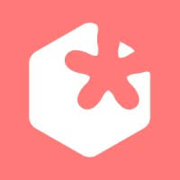

I am a Software Developer with over 7+ years of experience in the IT industry, specializing in both frontend and full-stack
technologies. I have a robust background in JavaScript and the software development process
along with a deep understanding of modern frameworks / libraries (Angular, React, and Vue.js).
I had an interest in academics, so in 2020, I took a break from my career and did my Masters in Computer Science at Vrije University Amsterdam.
My university projects were a not always focused on SW development, they were still very technical and demanded the best approaches on problem solving.
Some of these projects included high level software architecture and service oriented designs, working on semantic web platforms, profiling android apps, creating data-centers network topologies (SDNs) using Mininet,
deploying web services using Kubernetes, and building an educational game for kids in Sarawak (Malaysia).
In my free time, I have worked on a few personal projects, which included developing react native apps, chrome extensions and NPM packages, and some games built in C++ / JavaScript and Unity.
Front End Developer  Touchwonders March 2023 – Present
I’m currently a Front-End Developer at Touchwonders. The TW brand specializes in front-end product development, PWAs, and CMS integrated headless server architectures.
Sr Software Developer (Front End) Visa Inc September 2019 – December 2020
I was part of Visa’s core RTP team (Real Time Payments), working on RTP Infrastructure and building the UI for onboarding the client banks (FedNow and the AMF) and transaction dashboards. RTP aimed to provide Real Time Payments solutions for all banks and all currencies.
SW Engineer Visa Inc December 2016 – August 2019
CloudView Team: Visa’s private Cloud Platform. I worked mostly as a UI Developer (AngularJS / Angular5 + NgRx / MEAN Stack) but also gained experience in back-end development.
Associate Systems Analyst Visa Inc July 2015 – December 2016
Worked as a Microstrategy Admin, involved in updating data schemas and server maintenance. Part of support teams for Visa’s Tokenization (TPCAS), Verified by Visa (VbV), and Apple Pay.
Playback Controls →
A chrome extension built to control video playbacks / skip youtube ads.
Chrome Locker →
Chrome extension to restrict unauthorized access to your web accounts.
CodeViewer →
A VS Code inspired IDE plugin for GitHub.
Chrome Extensions CLI →
A CLI tool for building chrome extensions.
Neo Player →
A webview based app designed for YouTube with improved UX. The app isn't live yet but here's the walkthrough demo of it